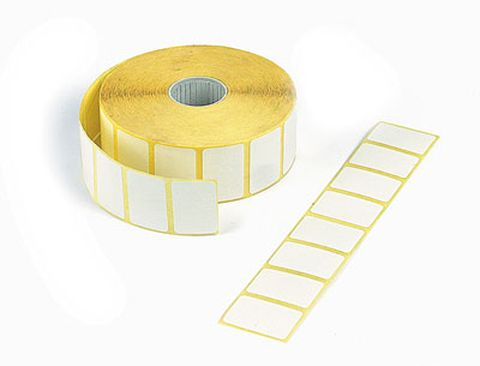
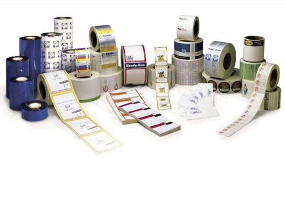
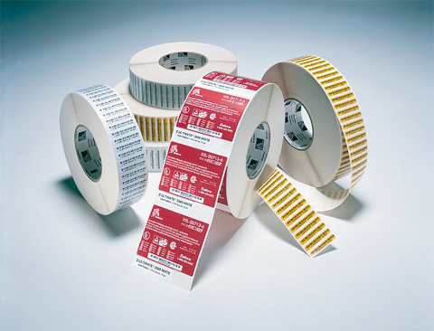
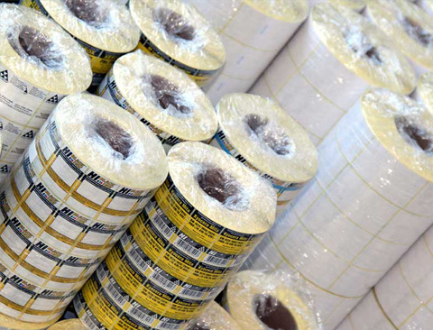

Наклейки и стикеры
Наклейки и стикеры
-

-

-

-

Изготовление наклеек и стикеров – одно из основных направлений нашего производства.
Печать наклеек и стикеров аналогична печати самоклеящихся этикеток. Отличие, как правило, заключается только в области применения. Наклейки чаще всего применяются в рекламных целях, стикеры – в оформлении мест продаж.
У нас есть огромный опыт изготовления стикеров и наклеек для продукции и оформления мест продаж, для промо-акций в розничной торговле. Мы предлагаем печать наклеек и стикеров как в рулонах, так и в листах или поштучно, в зависимости от требований заказчика.
Наши технологи посоветуют оптимальный материал и тип клея для изготовления наклеек и стикеров, подберут цвета и послепечатную обработку, чтобы наиболее выгодно подчеркнуть дизайн, а также проконтролируют качество готовой продукции.
Стикеры и наклейки для вашего бизнеса
Наклейки используются с разными целями:
Маркировка
Для штучного товара наклейка (стикер) выполняет функцию основной этикетки и содержит всю основную информацию о нем. Стикер может быть изготовлен из различных материалов (бумага, пленка), в разных цветовых решениях (полноцветный или черно-белый) и с разнообразной отделкой.
При наклеивании на групповую упаковку с товаром стикер выполняет функцию информирования о содержимом. Такие наклейки, как правило, печатаются на самоклеящейся бумаге в 1-2 цвета.
Также наклейки используют для информирования о качествах товара в дополнение к основной этикетке: цвет, размер, дата производства и проч. Например, на корпус помады печатается единая этикетка с логотипом компании, а на донышко - стикер с обозначением номера оттенка.
Контроль вскрытия
В этом случае наклейка клеится одновременно на банку и крышку и при снятии крышки разрывается. Для этого используют специальные саморазрушающиеся пленки и бумаги или наносят перфорацию на обычные. Наиболее востребованы такие наклейки для продуктов питания, косметических средств и фармацевтики.
Сюда же можно отнести так называемые «заклейки» - наклейки без печати, чаще всего прозрачные. Клеятся на коробки или пакеты, чтобы они не открывались в процессе транспортировки или складирования. Чтобы использовать эти наклейки для многократного открывания и закрывания (как на влажных салфетках или крупах), мы можем предложить уникальную операцию частичного гашения клеевого слоя.
В качестве дополнительной защиты продукта от подделки используются наклейки с голограммами.
Промо-акции
Производители используют различные методы привлечения внимания к своему продукту. Один из основных – размещение на продукте промо-стикера, который информирует потребителя об акции, скидках, подарках, увеличении объема, улучшении вкуса, повышении качества и прочих новых позитивных качествах продукта.
Печать стикеров и наклеек любого формата
Наша компания использует передовые технологии, позволяющие создавать оригинальные наклейки и стикеры отличного качества.
Наши возможности:
- Комбинированная или флексографская печать наклеек и стикеров на материалах:
- бумага (глянцевая, матовая, ламинированная фольгой и др.)
- термобумага Semi, Eco и Top
- металлизированная пленка и бумага
- полиэтилен и полипропилен (белые, прозрачные и матированные)
- другие специализированные материалы в ассортименте
- Двусторонняя печать (то есть на оборотной стороне или на клеевом слое)
- Послепечатная отделка наклеек и стикеров:
- Сплошное и выборочное УФ-лакирование (глянцевый или матовый эффект, а также защита от агрессивных воздействий среды)
- лакирование с металлизированными добавками
- «горячее» и «холодное» тиснение фольгой (в том числе стирающейся)
- конгревное тиснение
- ламинирование
- перфорация этикетки и подложки
- Трафаретная печать
- Печать металлизированными красками на различных материалах, в том числе со специальными добавками в лак или краску
- Полноцветная и пантонная печать с использованием стохастического растрирования, обеспечивающего защиту от подделки и придающего оригинальность этикетке
- Печать по клеевому слою (для нанесения большего количества информации или для декоративной отделки наклеек и стикеров, предназначенных для прозрачных упаковок)
- Печать с выборочным клеем (например, для упаковок с влажными салфетками)
- Печать на статической самоклеящейся бесклеевой пленке. Такие стикеры закрепляются на поверхности за счет статического электричества. Чаще всего применяются для сохранности дисплеев мобильных телефонов, стеклянных часов и проч
- Полноцветная и пантонная печать на скотче и буфлене (многослойный материал для саше)
- Печать и тиснение фольгой на самоклеящемся ацетате (тканевые наклейки и стикеры, используемые в производстве одежды и обуви)
- Печать и тиснение фольгой на ткани и кожи (полиэстер, ацетат, упаковочная тесьма и т.д.)